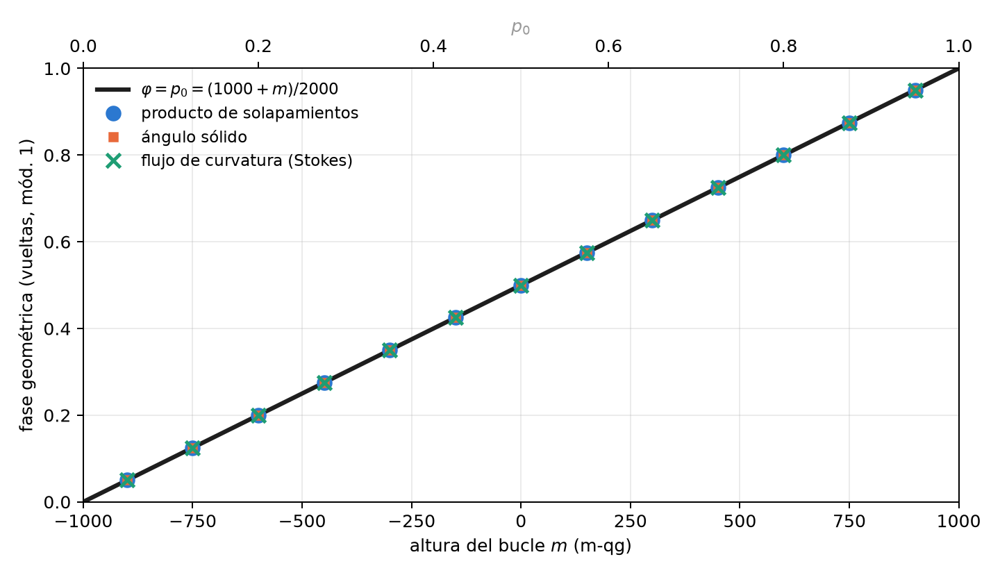
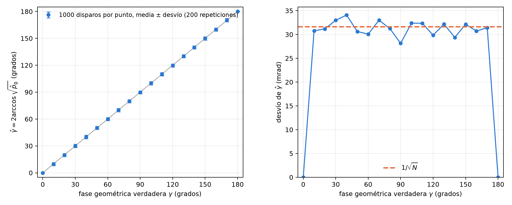

7 Fases geométricas y el teorema de Stokes en la esfera
La fase no es una probabilidad. El capítulo 2 mostró que las fases de una compuerta no aparecen en la matriz de transición: una medición en \(Z\) no las ve. Este capítulo trata una fase que sí tiene significado físico, la fase geométrica que adquiere un qubit llevado alrededor de un bucle cerrado, y muestra que la base del capítulo 1 la alcanza dos veces. Primero, su valor: para un bucle a altura constante, la fase en vueltas es la probabilidad \(p_0\). Después, su medición: un interferómetro la convierte en una probabilidad, y el ángulo qang de esa probabilidad es la fase (§84).
7.1 La conexión y la curvatura de Berry
Si un estado \(|\psi(\mathbf R)\rangle\) depende de parámetros \(\mathbf R\) y se lo lleva lentamente por un camino cerrado, además de la fase dinámica acumula una fase que depende solo de la geometría del camino. Su densidad es la conexión de Berry, \(\mathbf A=i\langle\psi|\nabla\psi\rangle\), y su rotor es la curvatura. Para un qubit, con el estado descrito por su vector qg sobre la esfera, la curvatura es un monopolo de intensidad \(\tfrac12\) en el centro: sobre la esfera unitaria su componente normal vale \(\tfrac12\) en todas partes.
7.2 Stokes en la esfera
El teorema de Stokes convierte la integral de línea de la conexión alrededor del bucle \(C\) en el flujo de la curvatura a través de la superficie que encierra. Como la curvatura es uniforme, el flujo es \(\tfrac12\) por el área, es decir, por el ángulo sólido \(\Omega(C)\):
\[ \gamma(C)=-\frac{\Omega(C)}{2}\pmod{2\pi}. \]
La fase es invariante de gauge (no depende de la fase que se elija para cada estado del camino) y cambia de signo al recorrer el bucle al revés.
7.3 Bucles a altura constante: la fase es la probabilidad
Un bucle alrededor del eje \(Z\) a sesgo polar constante \(qg_Z\) encierra el casquete que está por encima, de ángulo sólido \(\Omega=2\pi(1-qg_Z)\). En vueltas, la unidad \(qg_\Phi\) de la biblioteca,
\[ \varphi=\frac{\gamma}{2\pi}=\frac{qg_Z-1}{2}=-p_1\equiv p_0\pmod 1 , \qquad \varphi=\frac{1000+m}{2000}\ \text{vueltas}. \]
La fase geométrica de un bucle a altura constante, medida en vueltas, es la probabilidad \(p_0\) de su altura, y con el mili-qang es una función lineal de la lectura. La razón es la misma que hizo uniforme la distribución de Haar en el capítulo 4 (Sección 4.2): por el teorema de Arquímedes, la fracción de la esfera que queda en el casquete por encima de la altura \(qg_Z\) es \((1-qg_Z)/2=p_1\). El ángulo sólido es \(4\pi p_1\) y la fase, \(-2\pi p_1\).
Algunos valores: un bucle a \(+500\) m-qg (\(p_0=0{,}75\)) acumula \(0{,}75\) vueltas, es decir, \(-\tfrac14\) de vuelta; uno en el ecuador acumula media vuelta, \(\pi\); uno pegado al polo \(|0\rangle\), nada. La Figura 7.1 muestra la recta junto con los tres cálculos independientes de la sección siguiente.

El ecuador merece una nota. Allí la fase vale \(\pi\), y \(+\pi\) y \(-\pi\) son el mismo ángulo. Un cálculo numérico puede devolver cualquiera de los dos según el redondeo, y una comparación que no lo tenga en cuenta falla aunque el resultado sea correcto. Eso es exactamente lo que le pasaba a una de las pruebas de la biblioteca, corregida para comparar sobre el círculo.
7.4 Tres cálculos independientes
La biblioteca calcula la fase de tres maneras que no comparten código y verifica que coinciden (14 pruebas):
- Producto de solapamientos (Pancharatnam): \(\gamma=-\arg\prod_k\langle\psi_k|\psi_{k+1}\rangle\) sobre el bucle discretizado, invariante de gauge.
- Ángulo sólido, como abanico de triángulos esféricos (fórmula de Van Oosterom y Strackee). Coincide con el producto de solapamientos a \(10^{-10}\).
- Flujo de la curvatura a través del casquete, integrado numéricamente. Coincide con la integral de línea a \(10^{-5}\): es el teorema de Stokes verificado en números.
7.5 Medir la fase: el interferómetro y la ecuación de probabilidad
Una medición en \(Z\) no ve la fase. Para medirla hace falta un interferómetro: un qubit de control en \(|+\rangle\) gobierna si el sistema recorre el bucle, y al final se mide el control en la base \(X\) (prueba de Hadamard). Con la fase dinámica cancelada, por ejemplo con un eco, la probabilidad de leer 0 en el control es
\[ p_0=\frac{1+\cos\gamma}{2}=\cos^2\frac{\gamma}{2}: \]
la regla de Born del capítulo 1 con \(\gamma\) en el lugar de \(\theta\). Por lo tanto el ángulo qang de la probabilidad medida es la fase geométrica, \(\hat\gamma=2\arccos\sqrt{\hat p_0}\), y su lectura en mili-qang es \(m=1000\cos\gamma\).
Todo lo que la base dice de ese ángulo se aplica a la fase. En particular, por ser la transformación arcoseno (Sección 1.8), su incertidumbre es \(1/\sqrt N\) para cualquier valor de la fase. La Figura 7.2 lo verifica con una simulación de este capítulo: con 1000 disparos por punto, el desvío de \(\hat\gamma\) queda en torno a 32 mrad (unos \(1{,}8^\circ\)) de \(10^\circ\) a \(170^\circ\). En \(0\) y en \(\pi\) el desvío es cero porque el resultado es determinista, siempre 0 o siempre 1, y ahí hacen falta los intervalos exactos del capítulo 4.

Hay un límite, el mismo del capítulo 1. Como \(\cos\gamma\) es par, una sola probabilidad da \(|\gamma|\) en \([0,\pi]\), no su signo. El remedio es el del signo de rama (Sección 1.5): medir también la otra cuadratura, corriendo la fase de referencia un cuarto de vuelta, que da \(\sin\gamma\). Las dos probabilidades juntas fijan la fase en todo el círculo.
7.6 La fase de Pancharatnam y el octante
Para la luz polarizada la misma fase es la de Pancharatnam en la esfera de Poincaré, y el capítulo 6 ya dejó listas las coordenadas (Sección 6.1). El circuito H → D → R → H recorre un octante de la esfera: tres arcos de un cuarto de círculo máximo que encierran un octavo de su área, \(\Omega=4\pi/8=\pi/2\). La fase es \(\gamma=-\pi/4\), un octavo de vuelta hacia atrás (\(0{,}875\) vueltas módulo 1), y la biblioteca la reproduce a partir de los tres vectores qg.
7.7 Sin qang y con qang
| acción | sin qang | con qang | diferencia |
|---|---|---|---|
| fase geométrica de un bucle a altura constante | \(-\tfrac12\) del ángulo sólido, \(\Omega=2\pi(1-\cos\theta)\) | la fase en vueltas es \(p_0=(1000+m)/2000\) | equivalente; con qang se lee de una sola probabilidad medida |
| medir la fase en un interferómetro | invertir \(\cos^2(\gamma/2)\) con el método delta | el ángulo qang es la fase, con incertidumbre \(1/\sqrt N\) para cualquier valor | mismo resultado en el interior: el método delta también da \(1/\sqrt N\); qang lo da sin derivar. En \(0\) y \(\pi\) los dos dan ancho cero y hacen falta los intervalos del capítulo 4 |
| el signo de la fase | segunda cuadratura | segunda cuadratura | ninguna: el límite es el mismo |
Balance. La fase de Berry es la misma con o sin qang; lo que la escala agrega es leerla de una sola probabilidad y tener su barra de error sin derivar nada. No agrega precisión.
7.8 En código
import math
import numpy as np
from qang import geometric
geometric.cone_phase_turns(0.5) # 0.75 vueltas = p0 a +500 m-qg
geometric.cone_phase_turns(0.0) # 0.5: el ecuador, media vuelta
# bucle discretizado a qg_Z = 0.8: la fase por solapamientos, en vueltas
r = math.sqrt(1 - 0.8 ** 2)
bucle = [np.array([r * math.cos(a), r * math.sin(a), 0.8]) for a in np.linspace(0, 2 * math.pi, 400, endpoint=False)]
geometric.geometric_phase_qg(bucle).phi # 0.9 (= p0 = 0.9)
octante = [np.array([0, 0, 1.0]), np.array([1.0, 0, 0]), np.array([0, 1.0, 0])] # H, D, R
geometric.geometric_phase_qg(octante).phi # 0.875: -1/8 de vueltaLas figuras se generan con tools/make_cap07_figures.py.
7.9 Resumen
- La fase geométrica de un bucle cerrado es menos la mitad del ángulo sólido que encierra: el teorema de Stokes con la curvatura de Berry, un monopolo de intensidad \(\tfrac12\).
- Para un bucle a altura constante, la fase en vueltas es \(p_0\) (módulo 1), es decir, \((1000+m)/2000\): la misma razón de Arquímedes que hace uniforme la medida de Haar en m-qg.
- Tres cálculos independientes (solapamientos, ángulo sólido, flujo de curvatura) coinciden a \(10^{-10}\) y \(10^{-5}\).
- Un interferómetro convierte la fase en la probabilidad \(\cos^2(\gamma/2)\); su ángulo qang es la fase, con incertidumbre \(1/\sqrt N\) para cualquier valor, y el signo requiere una segunda cuadratura.
- El circuito de polarización H → D → R → H encierra un octante y acumula \(-\pi/4\).
Notas bibliográficas
La fase geométrica es la de Berry (1984), anticipada en óptica por Pancharatnam (1956). Su extensión a evoluciones cíclicas no adiabáticas es Aharonov y Anandan (1987), y la formulación general con la conexión de Pancharatnam, Samuel y Bhandari (1988). Las notas de investigación numeradas (§) que cita el capítulo y los scripts que lo verifican están en el repositorio (Monteverde 2026a); la definición de la unidad qang, en Monteverde (2026b).